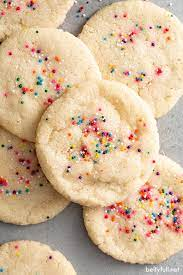

Easy Sugar Cookies
Ingredients
2 3/4 cups all-purpose flour
1 teaspoon baking soda
1/2 teaspoon baking powder
1 cup butter, softened
1 1/2 cups white sugar
1 egg
1 teaspoon vanilla extract
Directions
- Preheat the oven to 375 degreeso F.
- In a small bowl, stir together flour, baking soda, and baking powder. Set aside
- In a large bowl, cream together the butter and sugar until smooth.
- Beat in egg and vanilla.
- Gradually blend in dry ingredients.
- Roll rounded teaspoonfuls of dough into balls, and place onto ungreased cookie sheets.
- Bake 8 to 10 minutes in the preheated oven.
- Let stand on the cookie sheets for two minutes before removing
- ENJOY!
View the original recipe online
Contact
Send me an email!
University of Montana
32 Campus Drive
Missoula, MT 59812